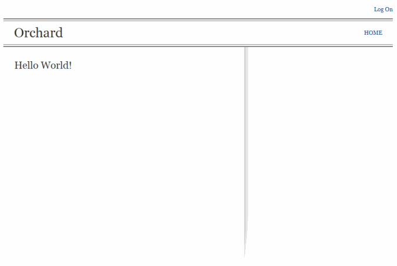

This article describes how to build a very small module for Orchard that will just display a "hello world" page. The technique that it shows you is a great start if you are looking to take control of the page lifecycle with your own MVC controller.
Another simple example of a module can be found here: Quick Start - Get module blueprint
This guide has been marked for review. If you are just getting started with Orchard module development you should read the Getting Started with Modules course first. It will introduce you to building modules with Orchard using Visual Studio Community, a free edition of Visual Studio.
Introduction
Orchard is built on top of ASP.NET MVC, which means that if you already know that framework you should feel right at home. If not, do not worry as we'll explain everything we're doing.
MVC is a pattern where concerns are neatly separated: there is a model (M) for the data, a controller (C) that orchestrates the UI and determines how it operates on the model, and a view (V) whose only responsibility is to display what the controller hands it.
In the case of our Hello World module, we won't have any data so the model will be of no concern to us. We will just have a controller and a view. All the rest will be some necessary plumbing to declare what we're doing to Orchard. We will come back to these concepts and recapitulate once we've built our module.
Modules in Orchard are sets of extensions that can be packaged in order to be re-used on other Orchard sites. Modules are implemented as MVC Areas. Areas in MVC are sub-sites that contain a set of features that act in relative isolation from the other parts of the site. An Orchard module is simply an area with a manifest file. It may use Orchard APIs (but it doesn't necessarily have to).
Generating the Module Structure
Before you can generate the file structure for your module, you need to download, install, and enable the Code Generation feature for Orchard. For more information, see Command-line Code Generation.
Once you have code generation enabled, open the Orchard command-line, and create the HelloWorld module with the following command:
codegen module HelloWorld
Modifying the Manifest
You should now have a new HelloWorld folder under the Modules folder of your Orchard web site. In this folder, you'll find a module.txt file. Open it and customize it as follows:
name: HelloWorld
antiforgery: enabled
author: The Orchard Team
website: http://orchardproject.net
version: 0.5.0
orchardversion: 1.8.1
description: The Hello World module is greeting the world and not doing much more.
features:
HelloWorld:
Description: A very simple module.
Category: Sample
This text file is describing your module to the system. The information contained in this file will be used for example in the features administration screen.
Note: While both spaces and tabs are supported to indent the manifest file, we recommend that you use spaces instead of tabs. As with your main coding, using spaces gives a more consistent editing experience when working in teams.
Adding the Route
Your module will have to handle the /HelloWorld relative URL under your Orchard web site. In order to declare what to do when that URL gets hit, create the following Routes.cs file in the HelloWorld folder:
using System.Collections.Generic;
using System.Web.Mvc;
using System.Web.Routing;
using Orchard.Mvc.Routes;
namespace HelloWorld {
public class Routes : IRouteProvider {
public void GetRoutes(ICollection<RouteDescriptor> routes) {
foreach (var routeDescriptor in GetRoutes())
routes.Add(routeDescriptor);
}
public IEnumerable<RouteDescriptor> GetRoutes() {
return new[] {
new RouteDescriptor {
Priority = 5,
Route = new Route(
"HelloWorld", // this is the name of the page url
new RouteValueDictionary {
{"area", "HelloWorld"}, // this is the name of your module
{"controller", "Home"},
{"action", "Index"}
},
new RouteValueDictionary(),
new RouteValueDictionary {
{"area", "HelloWorld"} // this is the name of your module
},
new MvcRouteHandler())
}
};
}
}
}
A route is a description of the mapping between URLs and controller actions. This code maps the HelloWorld URL to the area HelloWorld with the Home controller and the Index action.
Creating the Controller
The new module also has a Controllers folder ready to be filled. Create the following HomeController.cs file in that folder:
using System.Web.Mvc;
using Orchard.Themes;
namespace HelloWorld.Controllers {
[Themed]
public class HomeController : Controller {
public ActionResult Index() {
return View("HelloWorld");
}
}
}
This is the controller that will handle the requests for the HelloWorld URL. The default action, index, is requesting that the HelloWorld view gets rendered.
Notice the Themed attribute on the controller class that will request that the view gets skinned with the currently active theme.
Creating the View
In the Views folder, create a folder named Home. In the Views\Home folder, create the following HelloWorld.cshtml file:
<h2>@T("Hello World!")</h2>
This file is specifying the core contents of our view. All the chrome around it will get added by the current theme's default layout.
Notice that we used the T helper function that makes this view ready to be localized. This is not mandatory but it's a nice touch.
Adding the new files to the project
We're almost done. The only task remaining is to declare to the system the set of files in the module for dynamic compilation.
Open the HelloWorld.csproj file in a text editor and add the following lines after one of the </ItemGroup> tags:
<ItemGroup>
<Compile Include="Routes.cs"/>
<Compile Include="Controllers\HomeController.cs"/>
</ItemGroup>
Also add the following to the ItemGroup section that already has other Content tags:
<Content Include="Views\Home\HelloWorld.cshtml" />
Activate the Module
Finally, you need to activate your new module. In the command line, type:
feature enable HelloWorld
You could also have done this from the "Features" screen in the site's admin UI.
Use the Module
You may now add /HelloWorld to the URL of your Orchard site in your favorite web browser and obtain a nice Hello World message:

Conclusion
In this tutorial, we have built a very simple module that handles a route (/HelloWorld) through the home controller's index action and serves a simple view that gets skinned by the current theme. We have done so with only free tools and in a way that differs very little from what you would do in a regular ASP.NET MVC area. We did get a few things for free by making this an Orchard module, such as activation/deactivation of the module, or theming of the view with no effort on our part.
Hopefully this will get you started with Orchard and prepare you to build more elaborate modules.
The code for this topic can be downloaded from here: HelloWorld.zip